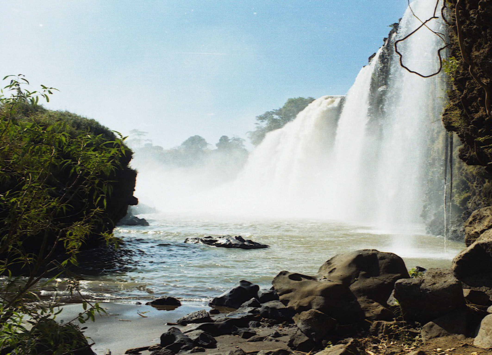

The Blue Nile originates at Lake Tana in Ethiopia (where it is called the Abay River). The river flows
generally south before entering a canyon about 400 km (250 mi) long, about 30 km (19 mi) from Lake Tana,
which is a tremendous obstacle for travel and communication between north and south Ethiopia. The canyon
was first referred to as the "Grand Canyon" in 1968 by a British team that accomplished the first descent
of the river from Lake Tana to the end of the canyon; subsequent river rafting parties called it the "Grand
Canyon of the Nile".[citation needed] The Blue Nile Falls (Amharic: Tis Abay, literally "great smoke"), one
of Ethiopia's biggest tourist attractions, is located at the start of the canyon.
The river loops across northwest Ethiopia, before being fed by numerous tributaries between Lake Tana and the
Sudanese border. Those on its left bank, in downstream order, include the Wanqa River, the Bashilo River, the
Walaqa River, the Wanchet River, the Jamma River, the Muger River, the Guder River, the Agwel River, the Nedi River, the Didessa River and the Dabus River. Those on the right side, also in downstream order, include the Handassa, Tul, Abbaya, Sade, Tammi, Cha, Shita, Suha, Muga, Gulla, Temcha, Bachat, Katlan, Jiba, Chamoga, Weter and the Beles.[